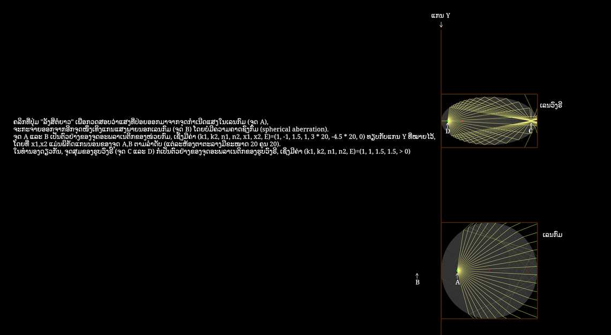

ຜູ້ປະກອບສ່ວນ: Stas Fainer
ຈຸດອະພລາເນຕິກ (Aplanatic points) ຂອງລະບົບແສງແມ່ນຈຸດພິເສດເທິງແກນແສງຂອງມັນ, ເຊິ່ງ "ລັງສີທີ່ອອກຈາກຈຸດໜຶ່ງຈະໄປລວມກັນ, ຫຼື ເບິ່ງຄືວ່າກະຈາຍອອກຈາກອີກຈຸດໜຶ່ງ".
ກຳນົດໃຫ້ສອງຈຸດມີພິກັດແກນນອນ \(x_1\) ແລະ \(x_2\), ມີພິກັດແກນຕັ້ງຄືກັນ, ແລະ ກຳນົດດັດຊະນີການຫັກເຫພາຍນອກ ແລະ ພາຍໃນອຸປະກອນແສງຂອງພວກເຮົາເປັນ \(n_1\) ແລະ \(n_2\) (ຕາມລຳດັບ), ເພື່ອໃຫ້ສອງຈຸດນີ້ເປັນຈຸດອະພລາເນຕິກ, ຂອບເຂດຂອງອຸປະກອນແສງຂອງພວກເຮົາຕ້ອງເປັນໄປຕາມສົມຜົນ\begin{equation}k_1 n_1 \sqrt{ (x - x_1)^2 + y^2} + k_2 n_2 \sqrt{ (x - x_2)^2 + y^2} = E\end{equation}ໂດຍທີ່ \(k_i=1\) ຫຼື \(-1\) ຖ້າລັງສີທີ່ເຊື່ອມຕໍ່ລະຫວ່າງ \(x_i\) ແລະ ຂອບເຂດຂອງອຸປະກອນແສງຂອງພວກເຮົາເປັນລັງສີຈິງ ຫຼື ລັງສີຈິນຕະນາການ, ຕາມລຳດັບ, ແລະ \(E\) ແມ່ນຄ່າຄົງທີ່ເຊິ່ງສົມຜົນນີ້ມີຄຳຕອບທີ່ບໍ່ແມ່ນສູນ. ສົມຜົນນີ້ (ເຊິ່ງສາມາດຫາໄດ້ຈາກຫຼັກການຂອງແຟມາ) ແມ່ນສົມຜົນຂອງ Cartesian oval, ເຊິ່ງພາກຕັດກວຍແມ່ນກໍລະນີພິເສດຂອງມັນ.
